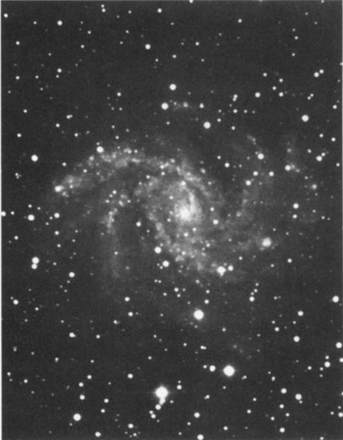

烟花星系 · Fireworks Galaxy (NGC 6946)
基础参数一览
| 参数 | 中文 | English |
|---|---|---|
| 类型 | 混合型旋涡星系 (SABcd) | Mixed Spiral Galaxy (SABcd) |
| 赤经 | 20时34.8分 | RA: 20h 34.8m |
| 赤纬 | +60°09′ | Dec: +60°09′ |
| 视星等 | 8.8等 | Magnitude: 8.8 |
| 视直径 | 11.2′×8.8′ | Angular Size: 11.2′×8.8′ |
| 表面亮度 | 14.2 | Surface Brightness: 14.2 |
| 距离 | 1800万光年 | Dist: 18 million light-years |
| 发现者 | 威廉·赫歇尔 (1798年) | Discoverer: William Herschel, 1798 |
| 所属星云 | 后发-玉夫星系云 | Coma-Sculptor Cloud |
NGC 6946 is a spiral galaxy with a pair of branching arms that have a puzzling propensity for supernova explosions. In the 20th century terrestrial astronomers witnessed six supernovae blazing forth in that galaxy (in 1917, 1939, 1948, 1968, 1969, and 1980). The longest duration between these events was 22 years, suggesting that, as of this writing, another seems about due.
NGC 6946是一个拥有分叉旋臂的旋涡星系，其频繁的超新星爆发倾向令天文学家倍感困惑。二十世纪期间，地面观测者曾在该星系目睹六次超新星爆发（分别发生于1917年、1939年、1948年、1968年、1969年和1980年）。这些事件的最长间隔仅为22年，这意味着截至本文撰写时，下一次爆发似乎已临近周期。
Considerably faint, very large, of an irregular figure, a sort of bright nucleus in the middle. The nebulosity [spans] 6 or 7'. The nucleus seems to consist of stars, the nebulosity is of the milky kind. It is a pretty object.
相当暗弱，甚大，形状不规则，中央有类明亮核。星云[延展]约6至7角分。核似由恒星组成，星云呈乳白色。此为颇佳之观测目标。
When William Herschel first turned his telescope toward this faint smudge in the constellation Cepheus on September 9, 1798, he could not have imagined that he was peering at one of the most explosive stellar nurseries in the entire observable universe. The galaxy that seemed "pretty" through his 18.7-inch speculum-metal reflector would later earn its legendary nickname: the Fireworks Galaxy.
当威廉·赫歇尔于1798年9月9日将他的18.7英寸镜面反射望远镜对准仙王座方向这团模糊的光斑时，他绝不会想到，自己正在凝视的是整个可观测宇宙中最剧烈恒星孵化器之一。这个在他看来"颇佳"的目标，后来赢得了举世闻名的绰号——烟花星系。
超新星工厂：宇宙中最繁忙的恒星墓场
The 20th century witnessed six supernovae erupting from NGC 6946. These catastrophic stellar deaths occurred in 1917, 1939, 1948, 1968, 1969, and 1980. As of this writing, another seems about due. Caldwell 12 could be the ticket to fame for a dedicated amateur who decides to survey that galaxy whenever possible.
二十世纪见证了六次超新星从NGC 6946中喷发而出。这些灾难性的恒星死亡事件分别发生于1917年、1939年、1948年、1968年、1969年和1980年。截至本文撰写时，下一次爆发似乎已临近周期。考德维尔12这个编号或许能成为执着业余天文爱好者的成名契机——只要坚持对该星系进行持续监测。
As seen from Earth, the 1980 eruption was the galaxy's brightest. The new star rose to a peak visual magnitude of 11.4 and outshone any foreground star near it.
从地球视角观测，1980年的爆发是该星系最明亮的一次，这颗"客星"的视星等峰值达到11.4等，亮度远超周围所有前景恒星。
Designated Supernova 1980K, this spectacular "guest star" was classified as a Type II supernova—one that occurs when a very massive supergiant star (one with 8 or more times the mass of our Sun) collapses abruptly after nuclear fusion grinds to a halt in its core. Astronomers now believe that the core of a Type II supernova progenitor collapses, then rebounds slightly, transferring prodigious amounts of energy to the star's envelope. The resulting shock wave blows much of that envelope into outer space.
这颗被命名为超新星1980K的天体经光谱分析属于II型超新星，即由质量极大的超巨星（质量超过太阳8倍以上）在核心核聚变停止后突然坍缩而形成的爆发。天文学家现在认为，II型超新星前身星的核心先发生坍缩，随后轻微反弹，将巨大能量传递给恒星包层。由此产生的激波会将大部分包层物质抛射到外太空。
隐藏在银河尘埃后的珍宝
Like IC 342 (Caldwell 5) and NGC 2403 (Caldwell 7), NGC 6946 is a member of the Coma-Sculptor Cloud of galaxies. Shining at magnitude 8.8, NGC 6946 lies only 11° from the central plane of the Milky Way, whose dust and gas dim its light by 1.6 magnitudes. Images taken through large telescopes reveal the system to be quite large. Its estimated linear diameter is 58,000 light-years, and it shines with a total luminosity of 30 billion Suns.
与IC 342（考德维尔5）及NGC 2403（考德维尔7）相似，NGC 6946同属后发-玉夫星系云成员。该星系视星等为8.8等，距银河系中央平面仅11°，因星际尘埃和气体消光导致亮度减弱1.6等。通过大型望远镜拍摄的图像显示，这个星系系统规模相当庞大——其线性直径估计达58,000光年，总发光度相当于300亿倍太阳光度。
We see NGC 6946 inclined 42° from face-on; its clumpy spiral arms are flung wildly open. Recent observations of these arms have caused some confusion. In theory astronomers expect to find a spiral's strongest magnetic fields at the inner edges of the visible spiral arms. A 1990s map of NGC 6946's polarized radio emissions did indeed trace out two well-defined magnetic arms. But these magnetic arms lay between the visible ones.
我们观测到的NGC 6946星系与正面对齐方向存在42°倾角，其块状旋臂呈狂野的开放形态。近期对这些旋臂的观测引发了若干困惑——理论上天文学家预期在可见旋臂内侧边缘会发现最强磁场，而1990年代对该星系偏振射电辐射的测绘确实勾勒出了两条边界清晰的磁力旋臂，但这些磁力旋臂却位于可见旋臂之间。
University of Chicago theorists Zuhui Fan and Yu-Qing Lou have since proposed that these out-of-phase magnetic arms are caused by a second, rather sluggish set of density waves that peak between the visible arms.
芝加哥大学理论物理学家范祖辉和楼宇庆随后提出：这些相位异常的磁力旋臂是由第二组相对滞后的密度波所引发，这些密度波在可见旋臂之间的区域达到峰值强度。

观测体验：与超新星猎手的对话
It's a shame that this astrophysical dynamo is not equally electrifying visually. Robert Burnham Jr. has little to say about NGC 6946's visual impression, except that "owing to the low surface brightness, the small central nucleus is the only detail which appears clearly to the visual observer."
遗憾的是，这个天体物理发电机在视觉上并不那么震撼人心。小罗伯特·伯纳姆
🔒 受限于篇幅，本文仅展示部分样章。O'Meara 先生完整的观测手记、实测数据及未公开的独家配图，请参阅原著双语典藏版。
👉 立即在闲鱼获取《DEEP-SKY COMPANIONS》中英双语高清典藏版